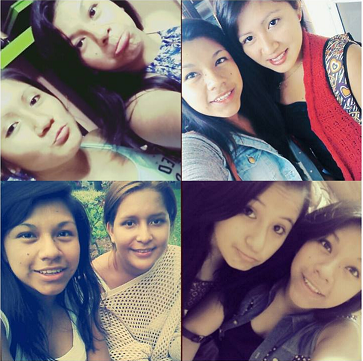

Sobre Mi Persona

Links


Acerca de

Respecto a mi personalidad soy muy sociable, aunque al principio sea callada y un poco tímida. Soy muy respetuosa y responsable ante los demás, mi defecto es que a veces soy muy impaciente. En cuanto a manías, no me gusta la gente creída, para mí que la gente sea humilde es muy importante, persona que miente la detesto. Me encanta escuchar música, en especial las baladas en inglés y español. También me gusta el deporte, juego vóley y me encantaría aprender a nadar.
Durante mi primer ciclo como estudiante universitaria realice un proyecto de investigación, sobre la extracción de Luteína. El objetivo principal era la creación de un producto comercial beneficioso para la salud, ya que protege la vista de algunos efectos dañinos del sol.
Sé que no he logrado mucho en estos dos ciclos de vida universitaria, pero tengo la certeza de que aún no han visto la capacidad de una huarmeyana cuando se propone algo. Mis metas son muy altas y creo que con esfuerzo, confianza de sí misma y apoyo de mi familia podre lograr todo lo que me propongo. A pesar de los obstáculos que te da la vida.
Como siempre digo: “Es un mal día, no una mala vida”.